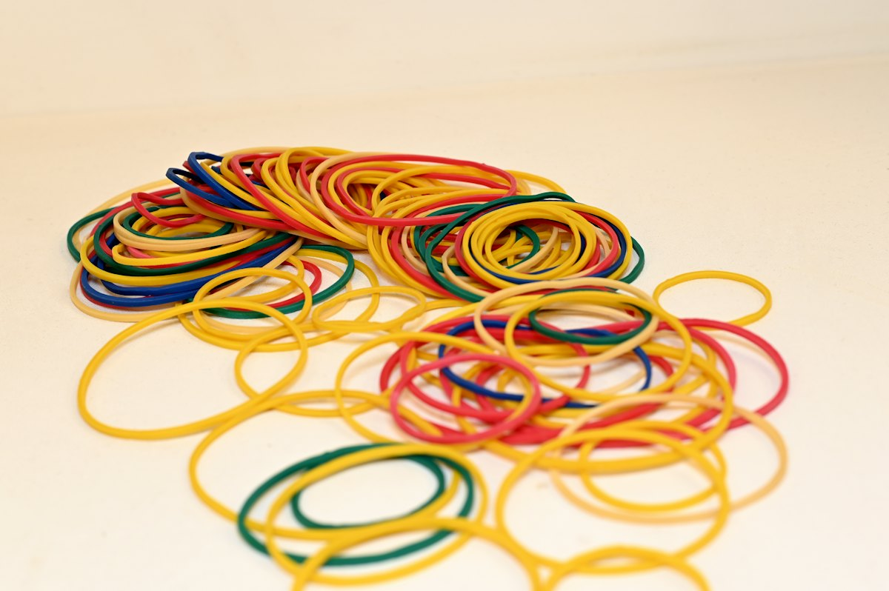
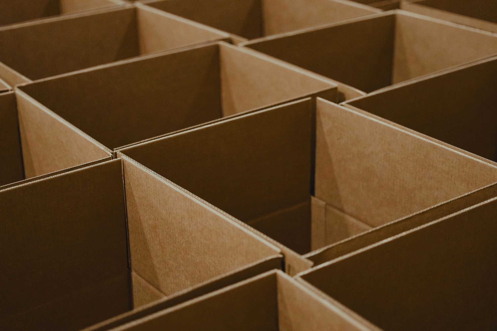
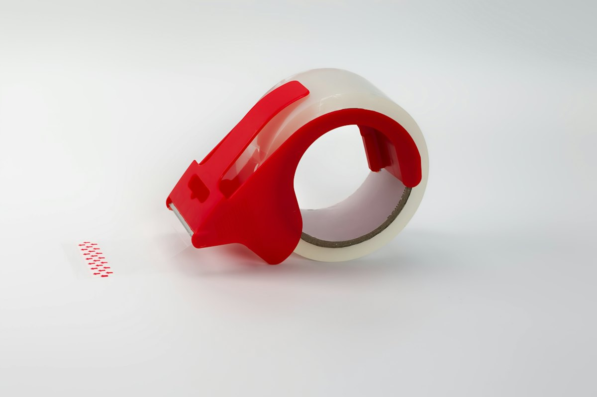
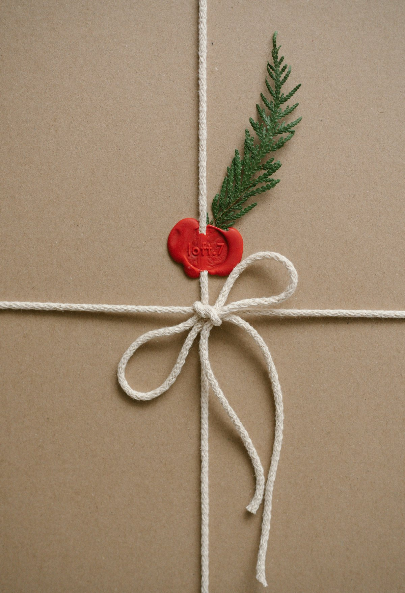
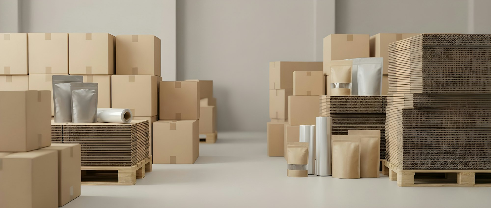

ゴムバンド・結束材
創業のゴムバンドから、さまざまな結束材まで。

包装資材の総合商社 台東区上野桜木
昭和5年にゴムバンドで創業して以来、結束用品・包装用品・店舗用品・生活用品をお届けしている包装資材の総合商社です。
包装資材の総合商社 台東区上野桜木
昭和5年にゴムバンドで創業して以来、結束用品・包装用品・店舗用品・生活用品をお届けしている包装資材の総合商社です。
結束用品
結ぶ。
創業のゴムバンドから、さまざまな結束材まで。
3Dのイメージです。画面をなぞると、ゴムが揺れます
創業は昭和5年、創始者・柳田勇造の柳田商店から。ゴムバンドを扱うところから始まり、今では粘着テープや紙製品、包装機械まで幅広く取りそろえる包装資材の総合商社です。
環境方針は「環境負荷の軽減を全社で進めよう」。結束用品、包装用品、店舗用品、生活用品の4本柱を育てています。

創業のゴムバンドから、さまざまな結束材まで。

梱包の現場で使うテープや機械、梱包物流機器も。

贈り物を包むリボンや、店舗用品もそろえています。

| お問い合わせ | お電話・メールで承ります |
|---|
製品のお問い合わせやお見積もりは、お電話かメールでどうぞ。